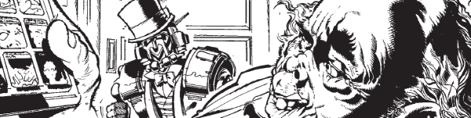

The highly deformed Otto Sump made millions after an appearance on Sob Story, leading to his release of Ugly products as part of a city-wide fad.
Art by Ron Smith
| Story Title | Parts | Pages | w indicates a wraparound coverCovers | Year(s) | Issues | Writer | Artist | Colourist | Letterer |
|---|---|---|---|---|---|---|---|---|---|
From Judge Dredd[Sob Story] | 2 | 12 | 0 | 1979 | 131-132 | John Wagner | Ron Smith | [b&w] | Tom Frame |
From Judge DreddOtto Sump's Ugly Clinic | 3 | 19 | 186: Ron Smith 1 | 1980 | 186-188 | Alan Grant John Wagnervarious | Ron Smith | <-- pp1-2e., [b&w] | Tom Frame |
From Judge DreddWho Killed Pug Ugly? | 1 | 6 | 0 | 1981 | Reprints: FCBD6‑QR203 | Alan Grant John Wagnervarious | Ron Smith | [b&w] | Tom Frame |
From Judge DreddGunge | 1 | 6 | Ron Smith 1 | 1982 | 280 | Alan Grant John Wagnervarious | Massimo Belardinelli | <-- 2pp, [b&w] | Tony Jacob |
From Judge Dredd[Get Smart] | 1 | 6 | 0 | 1985 | 436 | Alan Grant John Wagnervarious | Ron Smith | <-- 2pp, [b&w] | Tom Frame |
From Judge DreddCitizen Sump | 2 | + 2 credit pages30 | M4.13: Cliff Robinson and Chris Blythe 1 | 2002 | M4.12-M4.13 | John Wagner | John Higgins | <-- | Tom Frame |
| >> Features << | |||||||||
Faux ad.Monsieur Otto: High Class Uglification | 1 | 0.5 | 0 | 1980 | 188 | n/a | Ron Smith | [b&w] | n/a |
From Justice Department Data‑FileOtto le Sump | 1 | 1 | 0 | 1981 | JDA'82 | editorial | Ron Smith | [b&w] | n/a |
Faux ad.Otto Sump Cosmetic | 1 | 1 | 0 | 1991 | Reprints: M4.12M1.09 | unknown | unknown | <-- | n/a |
| year | episodes | pages |
| 1977 | 0 | 0 |
| 1978 | 0 | 0 |
| 1979 | 2 | 12 |
| 1980 | 3 | 19 |
| 1981 | 1 | 6 |
| 1982 | 1 | 6 |
| 1983 | 0 | 0 |
| 1984 | 0 | 0 |
| 1985 | 1 | 6 |
| 1986 | 0 | 0 |
| 1987 | 0 | 0 |
| 1988 | 0 | 0 |
| 1989 | 0 | 0 |
| 1990 | 0 | 0 |
| 1991 | 0 | 0 |
| 1992 | 0 | 0 |
| 1993 | 0 | 0 |
| 1994 | 0 | 0 |
| 1995 | 0 | 0 |
| 1996 | 0 | 0 |
| 1997 | 0 | 0 |
| 1998 | 0 | 0 |
| 1999 | 0 | 0 |
| 2000 | 0 | 0 |
| 2001 | 0 | 0 |
| 2002 | 2 | 30 |
| 2003 | 0 | 0 |
| 2004 | 0 | 0 |
Comic strip data (excludes other content):